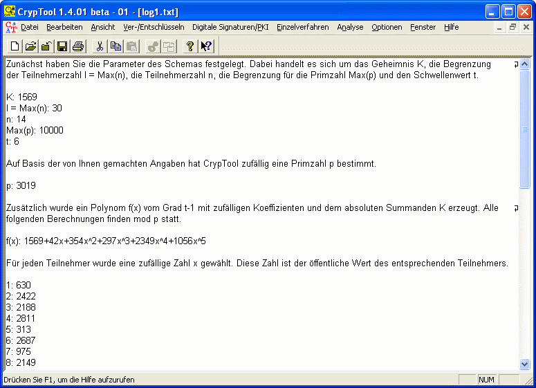

Dieser Dialog wird geöffnet, wenn Sie nach der Berechnung der Shares und der Auswahl der zur Rekonstruktion notwendigen Teilnehmer im Dialog Secret-Sharing-Demo den Button Rekonstruktion anklicken.
In der Liste „Ausgewählte Teilnehmer“ werden nun nur noch die Teilnehmer des Schemas angezeigt, deren Shares in die Berechnung des Geheimnisses eingebracht werden. Darunter erscheint das rekonstruierte Geheimnis. Alle Berechnungen, die im Rahmen der Visualisierung des Shamir-Verfahrens durchgeführt werden, werden in einer Logdatei gespeichert. Diese Informationen können Sie sich im Hauptfenster von CrypTool anzeigen lassen, wenn Sie den Button Logdatei anzeigen betätigen. Die Datei ist editierbar und kann im txt-Format abgespeichert werden.
